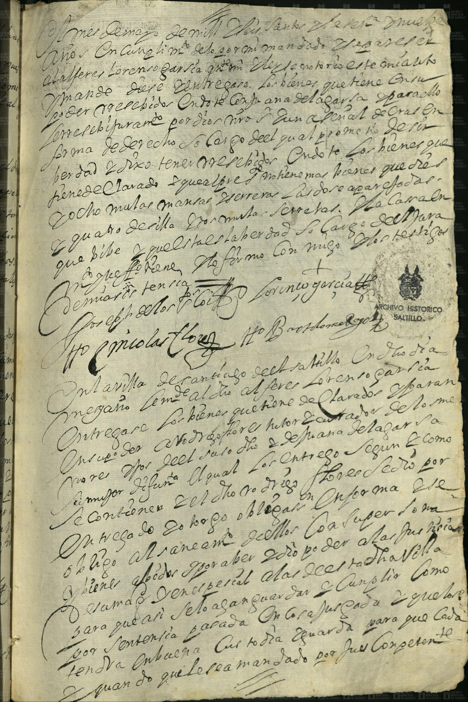
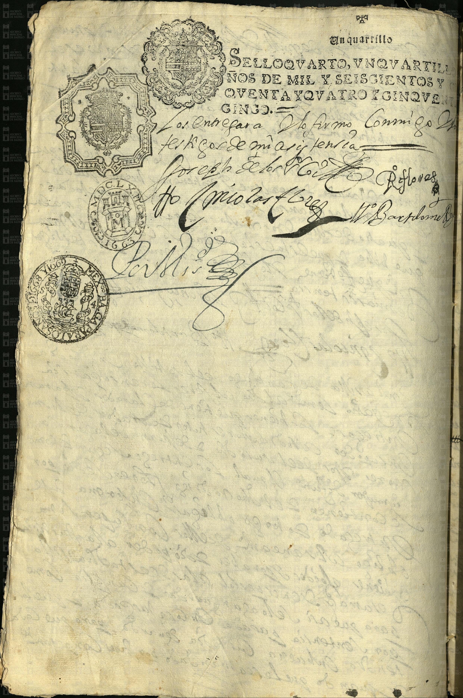

Lorenzo García y Juana de la Garza


| Fondo | Presidencia Municipal (PM) |
| Firma AMS | AMS, PM, c 2, e 49, d 56, 7 ff |
| Fecha | 5 de abril de 1659 (según la ficha del catálogo) |
| Descripción de la ficha del catálogo (tal cual) | Juana de la Garza, esposa de Lorenzo García, nombra herederos a sus seis hijos y tenedor y curador a su esposo. |
| Id de ficha en el portal | 78366 |
| Personas indexadas en la ficha | Juana de la Garza, Lorenzo García |
Lectura paleográfica parcial. Lo que no se lee con certeza está marcado [ilegible] o [duda: …] y no se toma como dato.
Hoja con texto en el anverso (imagen 1). Lectura parcial; lo no seguro va marcado.
[ilegible: primera línea; se alcanza a leer «… mes de mayo de mill …» — año [duda]]
«… años y en cumplimiento de lo por mí mandado llegaré el alférez Lorenzo García …» [duda: palabras intermedias]
«… mande dé y entregue los bienes que tiene en su poder recibidos en [duda: dote] de [duda: Juana] de la Garza …» [ilegible: resto del renglón]
[ilegible: dos o tres renglones] «… en forma de derecho, a su cargo …»
«… tiene declarados … y que además tiene otros bienes que son: ocho mulas mansas, aparejadas …» [duda: «cuatro de silla»] [ilegible: «… secretas»]
«… a cargo del …» [ilegible] «… dos testigos …» [ilegible]
Firmas al pie: «Lorenzo García» (rúbrica); [duda: «Joseph de los Co…»]; [duda: «… Nicolás Flores»]; [duda: «Bartolomé Ro…»]
«En la villa de Santiago del Saltillo … el alférez Lorenzo García … entregará los bienes que tiene declarados …» [duda: palabras intermedias] «… se obligó al saneamiento de ellos …» [duda] «… cumplir como por sentencia pasada en cosa juzgada …» «… y que los tendrá en buena custodia y guarda para que cada y cuando le sea mandado por juez competente.» (final de la página)
Reverso (imagen 2). Papel sellado impreso: «SELLO QUARTO, UN QUARTILLO, AÑOS DE MIL Y SEISCIENTOS Y [CIN]QUENTA Y QUATRO Y CINQUENTA Y CINCO» y sellos de habilitación con los años [duda: 1663] y [duda: 1668 y 1669].
«Los entregará. Doy fe, firmo conmigo dos testigos de mi asistencia.»
Firmas: [duda: «Joseph de los Co…»]; [duda: «… Flores»]; [duda: «Nicolás Flores»]; [duda: «Bartolomé Ro…»]; rúbrica de escribano [ilegible].
El resto del reverso muestra el texto del anverso en espejo por transparencia (no es texto propio).
Imagen y ficha: Archivo Municipal de Saltillo, Sefarad MX. Fuente: Archivo Municipal de Saltillo, portal del archivo digital (Presidencia Municipal). Verificado y avalado por Sefarad MX · genealogiasefardi.site.